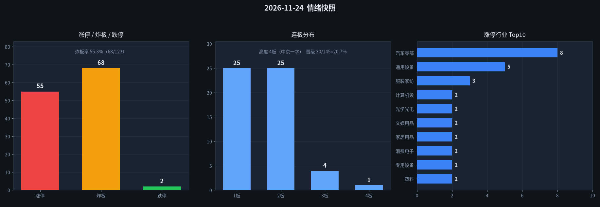

交易日 2026-11-24（周二） · 目标交易日 2026-11-25（周三） · 退潮初期·高度断板
情绪：退潮（初期） 涨停 55 · 跌停 2 炸板率 55.3% · 晋级率 20.7% · 高度 4板| 票 | 昨动作 | 今收盘涨跌幅 | 判定 |
|---|---|---|---|
| 拓普集团 | 高开＞3%不加 | 开 +3.63% 收 +2.63%，额38.68亿，未封 | 对 |
| 九阳 / 瑞芯微 | 只观察不加 | 九阳开+7.66%收 +10.01% 晋级2板（炸1、额11.43）；瑞芯微开+3.40%收 +2.27% 回落未封 | 对 |
| 真视通 / 盛剑 | 不接力5板 | 真视通开+2.30%收 −0.40%；盛剑开−0.98%收 −3.74%，双双断板 | 对 |
| 宇树科技 | 不追午后脉冲 | 开+2.54%收 +1.41%，额59.05亿，冲高回落 | 对 |
| 跌停残留 | 不抄 | 华达收 −9.46% 再砸；正川+3.84%、彩蝶+4.43%，只是弱反抽 | 对 |
一句话：昨日谨慎全部对——修复次日高开兑现、高度断板，拓普按「高开＞3%不加」避开回落。
改进（未回测）：修复偏强后的下一交易日，若竞价昨涨停普遍高开＞3%（今日 84/145=57.9%，均开约+4.13%），当天直接空仓，不必再等中军回封才放弃。
初期；高度断板，炸板率飙升。
涨停 55（周一145腰斩），跌停仍仅 2（未扩散），但晋级率从57.1%掉到 20.7%（30/145），炸板率从14.2%飙到 55.3%（68/123），红盘从约84.8%掉到约 34.4%。指数普遍高开低走：上证开+0.82%收 +0.27%，创业板开+3.88%收在最低 −0.05%，中证1000开+2.51%收 −0.23%。昨5板（真视通、盛剑）全部断板，今日高度只剩中京电子一字 4板（额仅8.33亿），撑不起空间龙。涨停池额约302亿，远小于炸板池约891亿——是高开兑现的流出，不是回流。定性是 退潮（初期）：不是冰点（跌停还没走扩），也不是修复的普通回踩（高度断板+炸板率翻倍以上+涨停腰斩同时出现）。默认空仓，不接力残留高度，不追中军回封，不抄断板和跌停。
今日为退潮，且炸板率明显飙升、主线资金撤出，触发情绪→路线2风险过滤句，见文末。
| 指标 | 数值 | 备注 |
|---|---|---|
| 涨停家数 | 55 | 已剔 ST / 北交所；东财涨停池 raw55→clean55（无需再剔） |
| 跌停家数 | 2 | 东财跌停池 raw2=clean2（无需再剔）；较周一3略减，未扩散。均为1连跌、开板0：鑫铂股份（工业金属，11:15封，额2.93亿）、英力特（化学原料，09:25封，额0.47亿） |
| 炸板家数 | 68 | 炸板池 clean68（raw68=clean68） |
| 炸板率 | 55.3% | 炸板/(涨停+炸板)=68/123；较周一14.2%大幅飙升 |
| 连板高度 | 4板 | 中京电子（元件，一字开收、炸0，额仅8.33亿、换手8.8%）——小额一字，不当空间龙。昨5板真视通/盛剑全部断板 |
| 连板结构 | 4板 1 / 3板 4 / 2板 25 / 1板 25 | 3板：东方海洋炸10额24.94亿（脏）；金新农炸0但额仅3.48亿；长华集团/克来机电一字小额（0.62/0.26亿） |
| 昨日涨停数 | 145 | 晋级分母用周一官方清洁池145。东财 previous 池 raw146→clean145（剔北交所捷众科技920690），与之一致 |
| 晋级数 / 晋级率 | 30 / 20.7% | 口径：周一清洁池∩今日涨停池（30/145）。较周一57.1%大幅回落。无昨日涨停直接跌停；炸板未晋级23家。晋级质量差：中京小额一字、东方海洋炸10、华东重机炸7、安培龙炸12、柯力传感炸32；干净的多为小额2/3板 |
| 高度/主线样本 | — | 高度5板全灭；汽车零部数量龙瓦解（昨22家→今8家且几乎全是小额）；PCB/算力中军高开回落未封；早盘干净大额首板几乎没有。广度与结构同步转弱 |
| 两市成交额 | 约 16551亿 | 新浪：上证≈7718.61 + 深成≈8832.25（周一约15529↑，放量约1022）。属高开低走的兑现放量，不是回流。东财指数接口本次502，点位与成交额用新浪 |
| 涨停池成交额合计 | 约 302亿 | 仅涨停标的（周一约1069大幅萎缩）；炸板池约891亿反超；跌停池约3.40亿 |
| 红盘占比 | 约 34.4% | 东财涨停专题涨跌分布已更新（qdate=20261124）：上涨1854 / 下跌3418 / 平盘111（1854/5383=34.44%）。乐咕已更新（2026-11-24 15:00）：上涨1838 / 下跌3267 / 平盘114（1838/5219=35.22%），活跃度35.18%；乐咕涨停64/真实52、跌停4/真实1，与东财池55/2口径不完全一致，已注明 |

附图：涨停 / 炸板 / 跌停 + 连板分布 + 行业集中。
读表一句话：涨停腰斩、炸板率飙到55%、晋级掉到21%、红盘回到约34%，高度5板全部断板——修复行情一天就走完了，进入退潮初期。
周二是典型的修复次日高开兑现：昨涨停约58%高开＞3%，均开约+4.13%；创业板收在最低，涨停额被炸板额反超。汽车零部昨天还是数量龙，今天中军拓普高开回落、跟风大面积炸板或闷杀，留下的只是小额一字3板。算力/PCB中军同样高开回落。高度断板后没有新的空间龙。早盘10点前干净首板只有5只，最大额也就奥尼电子1.96亿、雷迪克1.91亿——没有可做的大额干净首板。钱在撤，不在进。
昨22家涨停，今只剩8家、额合计仅约8亿（几乎全是小额）。中军：拓普集团高开 +3.63% 收 +2.63%，额38.68亿，未封。跟风里襄阳轴承收+4.82%未封；新泉股份炸3收+7.28%；浙江世宝收−2.84%；双环传动收−0.13%。晋级下来的长华集团、克来机电都是一字小额3板（0.62/0.26亿），铁流/光洋/一彬是小额2板，不当空间龙、也不当趋势龙。辨识：昨日数量龙今天已经撤，不是主线。
九阳股份高开 +7.66%，09:31封、炸 1，收 +10.01% 晋级2板，额 11.43亿（较昨25.19亿明显缩量）。海立收 +5.02% 未封，小熊 +1.64%、爱仕达 +2.26%、长虹美菱 +4.68%，华帝 −2.44%，簇还是不齐。高开7.66%的2板不是明日接力对象。
中京电子一字晋级4板，但额仅8.33亿，不当空间龙、不接力。中军全部冲高回落：沪电开 +9.63% 收 +1.73%（额89.12亿）、深南开+5.72%收 −0.29%、景旺开+10.00%炸4收 +3.11%（额43.56亿）；算力里旭创开+11.03%收 −0.05%（额285.83亿）、新易盛开+8.62%收 −0.74%、天孚开+14.62%收 +4.53%。东山精密炸板额146.58亿，工业富联炸11、额117亿——大额都在炸板池。瑞芯微开 +3.40% 收 +2.27%，额48.29亿，继续回落。先只观察、不加。
真视通5板断、收−0.40%；盛剑5板断、收−3.74%。东方海洋3板炸10，不当空间龙。华东重机2板额42.92亿却炸7、14:43才回封，脏。安培龙炸12、柯力传感炸32、横店影视炸9，都是脏回封。文投控股 14:54才封、炸1、额27.87亿，阳光照明 14:48封，都是尾盘脉冲，不当明日追高目标。宇树收+1.41%，继续不追。
鑫铂股份、英力特两只新跌停，额约3.40亿，尚未走扩，但不构成抄底理由。华达科技昨跌停今再砸至−9.46%，更不能抄。真视通/盛剑断板后的反抽也不接。
情绪 = 退潮（初期） → 专项总仓建议 0%（默认空仓，未回测）；同时持仓建议 0 只；不接力残留高度，不追中军回封，不抄断板和跌停。
| 代码+名称 | —（不点名追昨涨停或残留高度） |
|---|---|
| 动作 | 空仓观望（默认） |
| 进场 | 无。周三竞价若昨涨停大量低开＞5%，或中京等高度板打开后直线砸，或跌停走扩、指数快速跳水 → 全天不交易。 |
| 仓位 | 0%（未回测） |
| 原因 | 退潮初期：涨停腰斩、炸板率55.3%、晋级仅20.7%、高度断板、主线撤出。 |
| 作废 | 仅当盘中同时出现「炸板率明显回落、跌停不扩散、出现早盘干净大额首板且中军同步」才允许把观察线升级为极轻试错（否则维持空仓，未回测）。 |
| 代码+名称 | 002579 中京电子；002086 东方海洋、002548 金新农、605018 长华集团、603960 克来机电；002242 九阳股份 |
|---|---|
| 动作 | 不加（不接力中京一字4板，不追东方海洋脏3板，不接长华/克来/金新农小额3板，不追九阳高开2板） |
| 仓位 | 0% |
| 原因 | 中京额仅8.33亿，不当空间龙；其余3板一脏三小额；九阳高开+7.66%缩量晋级，簇仍不齐。 |
| 代码+名称 | 601689 拓普集团、000678 襄阳轴承、603179 新泉股份；002463 沪电股份、002916 深南电路、603228 景旺电子、300308 中际旭创、300502 新易盛、300394 天孚通信、603893 瑞芯微 |
|---|---|
| 动作 | 只观察 / 不加（不追今日高开回落的中军，不把散首板或炸板回封当主仓） |
| 进场 | 无开仓。只记录竞价强弱与是否回封，以及中军是否同步。高开＞3%或一字直接放弃。 |
| 仓位 | 0%（未回测） |
| 原因 | 拓普按规则今日已放弃，板块跟风已撤；PCB/算力中军全面高开回落，大额都在炸板池。 |
| 作废 | —（升级条件见指令1，未回测） |
| 代码+名称 | 002771 真视通、603324 盛剑科技；002685 华东重机、301413 安培龙、603662 柯力传感、603103 横店影视；600715 文投控股、600261 阳光照明；688836 宇树科技 |
|---|---|
| 动作 | 不加（不抄断板反抽，不接华东重机/安培龙/柯力脏回封，不追文投/阳光尾盘脉冲，继续不追宇树） |
| 仓位 | 0% |
| 原因 | 5板已断；大额2板多数靠反复回封；文投/阳光是尾盘脉冲，次日最容易被追高。 |
| 代码+名称 | 003038 鑫铂股份、000635 英力特；603358 华达科技（昨跌停今再砸至−9.46%） |
|---|---|
| 动作 | 不加 / 不抄底 |
| 仓位 | 0% |
| 原因 | 跌停虽未扩散，但是退潮初期的新亏钱效应，不是反包信号；华达连续走弱更不能抄。 |